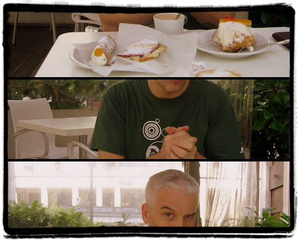
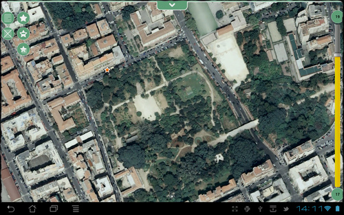
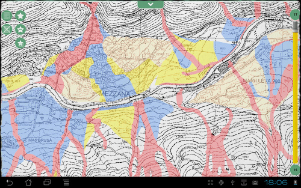

Subito due premesse: la prima è che lo stupido titolo fa riferimento alle pecore, la seconda è che questo post avrebbe dovuto essere pubblicato nella categoria “Up, close and personal” che da tempo abbiamo rimosso.
Uso Geopararazzi da tempo, e ho il privilegio e il piacere di conoscerne l’autore: Andrea Antonello. Sino a pochi giorni fa era però soltanto una conoscenza virtuale, ma il 27 aprile scorso è venuto trascorrere tre giorni di relax nella mia Palermo, spesi in visite lampo tra i numerosi beni culturali e ambientali di questa terra.
Una compagnia fissa è stata la ricotta: abbiamo iniziato con le muffolette, continuato con le cassatelle e chiuso con sfince di San Giuseppe e cannoli.

A Palermo (ed in quasi tutta la Sicilia) la ricotta è (quasi) soltanto di pecora. Credetemi è qualcosa di superiore, senza rivali nella sua categoria.
Io e Andrea siamo dei nerd geek normalmente “incollati” davanti al PC, ma il molto bello, il molto buono e dei strani superpoteri hanno preso il sopravvento e in questi giorni insieme siamo stati lontani da qualsiasi computer e abbiamo parlato di geomatica soltanto 10 minuti. Eravamo in macchina verso la “Riserva dello Zingaro”:
Andrea B. : Sarebbe bello in Geopaparazzi poter inserire come mappa di sfondo una propria base cartografica (una carta tecnica, una porzione di ortofoto, ecc.). Non dovrebbe essere difficile replicando il meccanismo di accesso ai tasselli dei layer ufficiali (OpenStreetMap, CycleMap, CloudMade, ecc.).
Andrea A. : Ci penso da tempo, ed avevo chiesto a tizio caio di mandarmi dei dati per fare un test, ma non li ho ancora ricevuti.
Andrea B. : Allora te li mando io
Un software come questo, utile per fare rilievi sul campo con uno smartphone, deve avere la possibilità di inserire come sfondo una proprio layer di sfondo; per ragioni legate ad una migliore qualità di rappresentazione, ad una maggiore risoluzione, ad un temastismo più adeguato e ad una data di aggiornamento più recente delle basi scelte.
Rientrato Andrea a Bolzano, gli mando subito il link al servizio pubblicato in tile caching dal S.I.T.R. Infrastruttura Dati Territoriale della Regione Siciliana (segnalatomi da Agostino Cirasa), e gli propongo di fare dei test con questo.
Stordito piacevolmente dalla ricotta ancora in circolo nel suo sangue, riesce subito ad ottenere un risultato. Con lui tutto sembra sempre molto facile, perché è una vera cintura nera di sviluppo in Java di applicazioni spaziali, ed è uno che ci mette sempre molta energia e positività.

Facciamo allora subito altri test, a partire da basi a sua disposizione ed abbiamo però qualche piccolo problema.
OpenStreetMap, Google Maps, Bing maps, Yahoo! maps e molti altri provider cartografici pubblicano i propri dati utilizzando meccanismi di tile caching che sfruttano la stessa proiezione (EPSG:3785), lo stesso taglio di tasselli, la stessa risoluzione e la stessa definizione dei livelli di zoom. L’unica differenza è nel modo in cui vengono indicizzati, e le chiamate dei client devono tenerne conto, in modo da scaricare il tassello corretto per quella zona a quel dato livelo di zoom. Il nostro problema nasceva banalmente proprio da qui: avevo generato dei tasselli secondo lo schema OGC, mentre Geopaparazzi se li aspetta secondo lo schema OSM.
Per fortuna è soltanto una questione di indici, e analizzato e compreso insieme con Andrea il problema, lui ha subito scritto il codice necessario a fare dialogare il suo software con lo schema OGC (e con altri), e finalmente abbiamo iniziato a visualizzare le nostre basi basi come layer di sfondo.

Come vi dicevo Andrea è bravo ed energico, ed in poche ore ha creato anche un motore per generare comodamente dalla GUI di uDig – tramite i JGrasstools - cartelle di tasselli da usare come source per Geopaparazzi, ed ha scritto il codice per abilitarne l’accesso anche da uDig.
Tutto questo lo vedrete nella prossima versione di Geopaparazzi e questo vale soltanto come post di annuncio; al rilascio ne daremo conto anche qui, con dei contributi più “tecnici” e pratici.
E’ stata la prima volta che ci siamo messi in gioco insieme su qualcosa di tecnico, ed è stata un’esperienza umana e professionale molto bella. Non abbiamo fatto nulla di straordinario, ma ci siamo resi conto che unendo competenze e passione si ha come la sensazione di avere dei superpoteri.
L’ultima sera a Palermo l’abbiamo passata guardando The Avengers al cinema, e qualche giorno fa Andrea mi ha detto che “guardare fumetti insieme è qualcosa di molto intimo”. Per un po’ di tempo in chat lo chiamerò Tony (il ragazzo prodigioso è lui) e lui, rivolgendosi a me, Bruce!
Andrea ha scritto la sua versione del post nel suo blog.
Letture fatte e consigliate
I contenuti potrebbero non essere più adeguati ai tempi!

By Emanuele on mag 16, 2012
La geoinformatica è davvero affascinante.
In qualità di “cintura nera” di java spero di metterci le mani per lavoro, presto o tardi.
By Andrea Borruso on mag 16, 2012
Caro Emanuele,
grazie per essere sempre da queste parti.
Dovresti conoscere Andrea Antonello, vi piacereste molto.
Geopaparazzi è un prodotto opensource, e se vuoi potresti iniziare a sporcatici le mani. Un cintura nera fa presto
Un abbraccio
By Emanuele on mag 16, 2012
> Geopaparazzi è un prodotto opensource, e se vuoi potresti iniziare a sporcatici le mani. Un cintura nera fa presto
Intanto ho aggiunto il progetto fra i preferiti in google code… Vedremo, vedremo…
By Crono on mag 17, 2012
voi state parlando di futuro e non ne siete consapevoli ahah…
By Agostino on mag 17, 2012
Ciao Andrea, grazie della citazione.
By Andrea Borruso on mag 17, 2012
Agostino, grazie a te ed al tuo ufficio per il lavoro che fate.